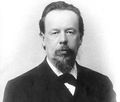
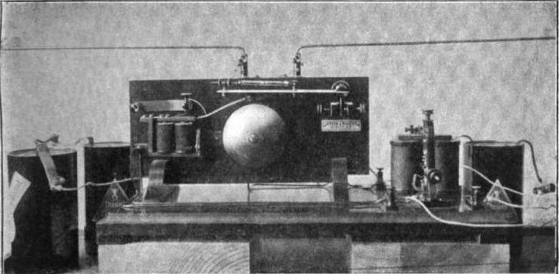
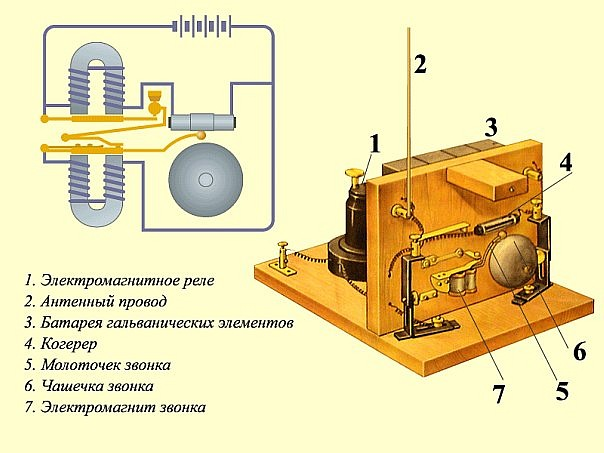
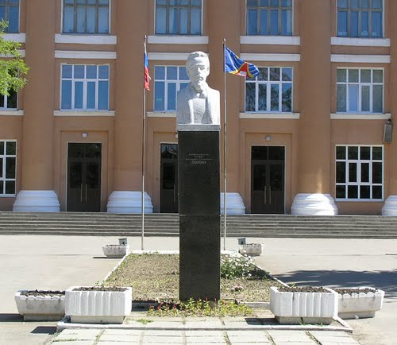
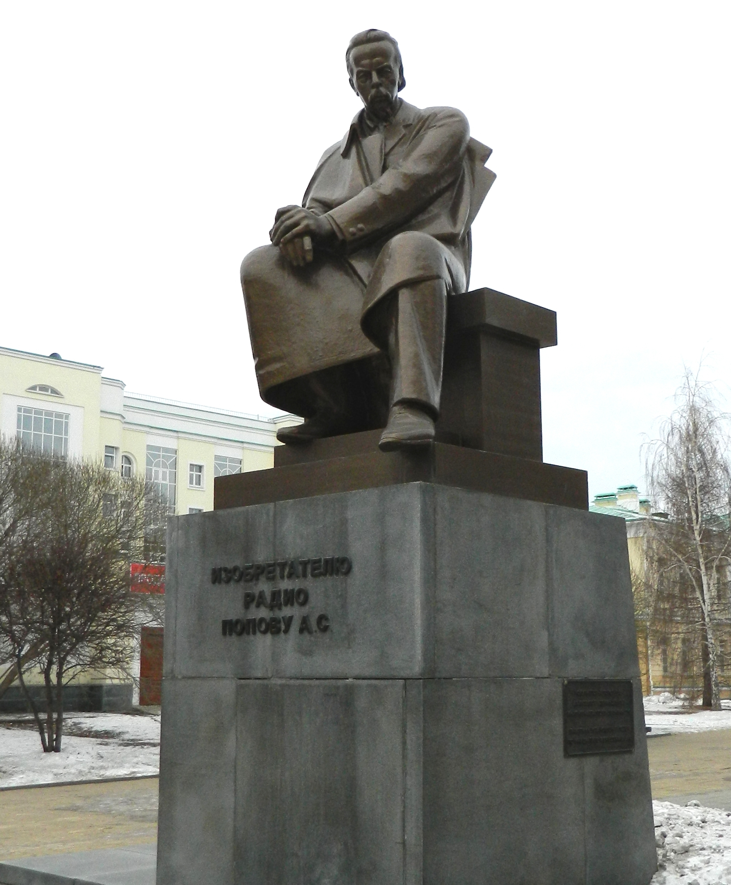

Попов Александр Степанович

Радио - одно из самых значимых достижений человеческого разума конца XIX века. А начало развития радиотехники неразрывно связано с именем , которого в России считают изобретателем радио.Русский ученый Александр Попов родился 4 [16] марта 1859 г в поселке Турьинские рудники, сейчас - город Краснотурьинск Свердловской области в семье священника Степана Петрова Попова и его жены Анны Степановны.
Учился в Далматовском, а затем Екатеринбургском духовных училищах. В 1877 году с отличием окончил общеобразовательные классы в Пермской духовной семинарии. После этого поступил на физико-математический факультет Петербургского университета. Учась в университете, был ассистентом на лекциях по физике, работал экскурсоводом в Первой электротехнической выставки в Санкт- Петербурге, в 1881-1883 годах работал монтером электростанции в товариществе "Электротехник".
В 1882 году защитил диссертацию "О принципах магнито- и динамо-электрических машин постоянного тока" и получил ученую степень кандидата наук. На следующий год ученый совет университета решил оставить его при университете для подготовки к профессорскому званию.
Александр Степанович занимался и преподавательской деятельностью, в частности читал лекции и вел практические занятия в Кронштадте в Минном офицерском классе (МОК) Морского ведомства.
В апреле 1887 года Попов был избран членом Русского физико-химического общества (РФХО), в 1893-м вступил в Русское техническое общество (РТО).
Он много путешествовал - не только по России. Так, в том же 1893 году был на Всемирной промышленной выставке в Чикаго (США). Посетил Берлин, Лондон и Париж, где знакомился с деятельностью научных учреждений.
Основной вехой в деятельности Попова стало создание им радиоприемника и системы радиосвязи. В 1895 году он изготовил когерентный приемник, способный принимать на расстоянии без проводов электромагнитные сигналы различной длительности. Собрал и испытал первую в мире практическую систему радиосвязи, включающую искровой передатчик Герца собственной конструкции и изобретенный им приемник. В ходе опытов также была обнаружена способность приемника регистрировать электромагнитные сигналы атмосферного происхождения.

Грозоотметчик Попова (фото из издания 1907 года)
В том же году Попов выступил на заседании РФХО с докладом "Об отношении металлических порошков к электрическим колебаниям", во время которого и продемонстрировал работу аппаратуры беспроводной связи. Пять дней спустя в газете "Кронштадтский вестник" было опубликовано первое сообщение об успешных опытах Попова с приборами для беспроводной связи.
В 1898 году началось промышленное производство корабельных радиостанций Попова фирмой Э. Дюкрете в Париже. Созданная по инициативе ученого кронштадтская радиомастерская - первое радиотехническое предприятие России, с 1901 года приступила к выпуску аппаратуры для Военно-Морского флота. В 1904 году петербургская фирма "Сименс и Гальске", немецкая фирма Telefunken и Попов совместно организовали "Отделение беспроволочной телеграфии по системе А. С. Попова".

Схема релейного приемника А.С. Попова
В 1901 году Александр Степанович Попов стал профессором физики в Электротехническом институте императора Александра III. В 1905 году по решению Ученого совета стал первым избранным директором института.
Вообще, нужно отметить, что деятельность Попова как ученого и изобретателя была высоко оценена и в России, и за границей еще при жизни. Ему была присуждена премия РТО, Высочайше пожалована премия "за непрерывные труды по применению телеграфирования без проводов на судах флота", он был награжден Большой золотой медалью Всемирной промышленной выставки в Париже(1900), орденами Российской империи, избран почетным членом РТО, почетным инженером-электриком и президентом РФХО.

Памятник Попову А. С. перед зданием Рязанского радиотехнического университета (РГРТУ - РГРТА - РРТИ)
После его смерти 13 января 1906 года в России был создан фонд и учреждена премия его имени. В 1945 году был учрежден праздник - День радио, отмечаемый 7 мая, учреждены знак "Почетный радист" и Золотая медаль АН СССР имени А. С. Попова, именные премии и стипендии. Также именем Попова названы малая планета, объект лунного ландшафта обратной стороны Луны, Центральный музей связи и улица в Петербурге, НИИ радиоприема и акустики, теплоход. Ему воздвигнуты памятники в Санкт-Петербурге, Екатеринбурге, Краснотурьинске, Котке (Финляндия), Петродворце, Кронштадте, на острове Гогланд.

Памятник изобретателю радио Попову А.С. в г. Екатеринбург
А в 2005 году Международный институт инженеров электротехники и электроники (IEEE) установил в Санкт-Петербургском государственном электротехническом университете "ЛЭТИ" мемориальную доску в память об изобретении радио Поповым. Таким образом международным общественным признанием организация подтвердила приоритет Александра Степановича Попова в изобретении радио.